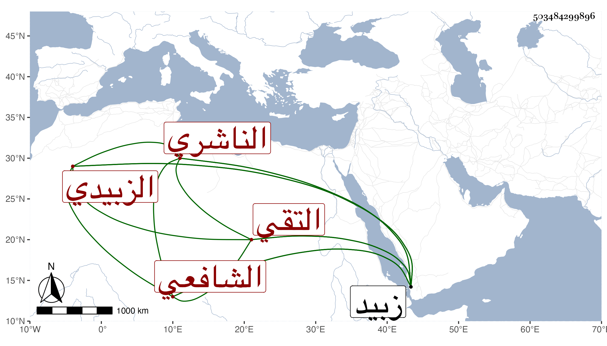

0902Sakhawi.DawLamic.ITO20230111-ara1.EIS1600.503484299896
Biography ID: 503484299896
331
عمر بن علي بن أبي بكر التقي الزبيدي الناشري الشافعي . ولد في شوال سنة أربع وستين بزبيد وحفظ قطعة من التنبيه وقرأ البخاري والترمذي وسيرة ابن هشام وبعض مسلم على قاضي زبيد محمد بن عبد السلام وكذا تفسير البغوي والرسالة القشيرية وعلى الفقيه أحمد بن الطاهر أشياء ، وحج في سنة ست وتسعين وسمع علي في بلوغ المرام ثم عاد وقدم في التي بعدها وسمع مني المسلسل وغيره وأثنى عليه حمزة بقوله أنه من طلبة الحديث رجل صالح مبارك وقال أنه كثير الثناء على والذكر لي يلتمس البركة .
